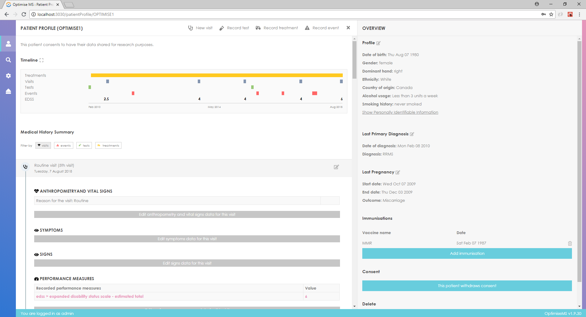
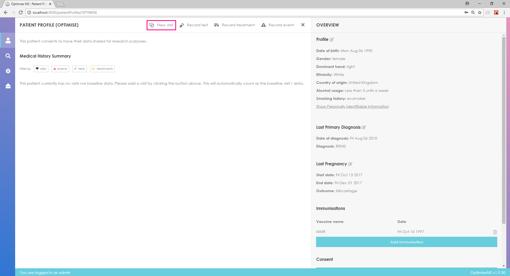
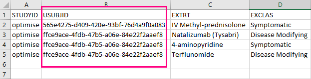

Welcome to the
OPTIMISE Portal
A site for access to open-access tools for collection of
real-world Multiple Sclerosis patient data
A site for access to open-access tools for collection of
real-world Multiple Sclerosis patient data
Real-world clinical data is needed to understand the course of disease, assess clinical effectiveness of medicines and to remain alert to unexpected serious adverse events or frequencies of adverse events (Mult Scler 23 (2017)362). The OPTIMISE Project Team, which has involved neurologists from several UK centres, was created to address this need for multiple sclerosis (MS) care.
A core objective of the OPTIMISE Team has been to encourage MS neurologists to comprehensively record standardised data on their patients and to share this in anonymised fashion with other clinicians and researchers to improve patient care and health outcomes.
The Team recognises that software tools for MS patient data entry and curation have been generated before and already are being used by some MS centres. However, some of these have been developed by single centres only and others may have a more complex range of data fields than is needed for usual practice. Neither are in wide-enough use.
The OPTIMISE Team therefore worked with a core group of MS neurologists and solicited views of patients, industry and regulators regarding the kinds of data that are needed to make clinical decisions, to meet needs for prospective pharmacovigilance and that are practical to acquire. The Team explored ways of making them easier to record. With this input, an open-access software tool was developed to facilitate the capture of prospective longitudinal, standardized clinical data in MS. This tool can be downloaded here for use by clinicians for MS care research.
The tool will generate .csv output files. Users are encouraged to share anonymized data with larger registry efforts, such as MSBase (https://www.msbase.org/) or the UK MS Register (for UK based clinicians, https://www.ukmsregister.org/Portal/Home).
Additional updates to the tool will be provided periodically. The OPTIMISE Team also is working to develop joint research projects to encourage real world data collection in MS care. Users are encouraged to register through this website to receive updates on the tool or news about about studies using OPTIMISE or enhancements for data sharing. Feedback regarding to software is welcome: please send comments by email to ******.
OPTIMISE is accessible throught this website in two forms: direct access to our demo servers and packaged containers.
To access our demo server, simply head here.
If you are an IT professional and would rather deploy the application on premise you can get this done in four simple steps.
18.x.y-ce.1.8.x.cd> into it.curl -s https://optimise-ms.org/install | bash :After successfully executing the installation command the application will be available on port 8080. This can be changed by directly editing the docker-compose.yml file present in the installation directory.
At any point it is possible to upgrade to the latest version of Optimise by simply going to the same folder you created in step 1 and run the installation command of step 4 again.
OPTIMISE MS is a system for recording data including demographics, clinical events, treatments and tests according to CDISC standards for Multiple Sclerosis. OPTIMISE MS allows researchers to better monitor MS patients’ progress, record outcomes and evaluate treatments.
The user can enter demographic, medical history and family medical history, clinical event, visit, test and treatment data.
OPTIMISE MS can be used in two modes; the off-site mode when networking is enabled and the on-premise mode when networking is disabled.
To start using the OPTIMISE portal first open your favorite modern browser.
Then, enter the hosting address in the address bar.
You should see the following screen. Enter the user name and password that were given to you and click the Log in button. The default username is admin and the password is admin.

If the log-in is successful, you should see the following screen.

If the log-in is unsuccessful, you will get a message. Re-enter user credentials.
In order to search for patients, click in the search box (highlighted in red) and enter the patient ID. Choose from the list of patient IDs below the search box.

A timeline and any Medical History information about the patient already in the database will be available in the left panel. The patient profile is available in the right panel. Primary Diagnosis (if entered), Immunisation and Pregnancy information is also available in the right panel.

In order to create a new patient, click on the search box button and enter the patient ID. If there are no patients with the entered ID, you may create a new patient by clicking the button as shown below.

Once you click the Create button, you should fill the following form and click Submit in order to create the patient. A warning message will be shown if any of the field(s) are not filled.

If the patient creation is successful, the data sections described in Searching patients above are shown on screen.
You may click on the Timeline to access the corresponding entry in Medical History Summary.
If there are no visits created for the patient, the Timeline and Medical History should be empty as shown below.

In order to enter Immunisation or Pregnancy data, click on the buttons in the highlighted sections.

In order to create a visit, click on the Create visit button at the top centre of the page. To enter Test, Treatment and Clinical Event data, you need to create a visit first.
Fill in the required fields and click submit to create the visit which will be added to the Medical History section.

Click on Edit/Add and fill the fields in the right panel as required. Click Save at the bottom right of the page to save the entry.

In order to create a new Test, Treatment or Clinical Event, hover over the appropriate button and select a visit as shown below.

Fill in the new test form in the right panel and click submit to create a new test.

The new entry will be added to the relevant Visit entry in the Medical History section. Click on 'results' to enter further test data.

In order to create a new Treatment, hover over the appropriate button and select a visit. Click 'results' in the Medical History section to enter treatment interruptions.


In order to create a new Clinical Event, hover over the appropriate button and select a visit. Click 'results' to enter further information about the clinical event.


In order to export the database as separate csv files, click on the export button (highlighted in red) and choose where to save the files.
The administrator can manage the users (create and delete user accounts) by accessing the relevant option (Manage users) in Admin menu. The Admin menu can be accessed by clicking the icon highlighted in red.

The administrator can view the access log by clicking on View access log in the Admin menu.

To log out click on the icon located at the bottom left of the page as shown below.

As we are currently in preview; the source code is not yet available. Keep watching for some update soon
OPTIMISE is finally starting its journey to help you collect data for MS patients.
Creation of the OPTIMISE Database tool was sponsored by Imperial College London and generously funded by Biogen. This project also has been supported by the Imperial College NIHR Biomedical Research Centre Brain Sciences Theme. The core OPTIMISE Team exercising oversight over the software development project included Ruth Dobson (St George’s Hospital), Matt Craner (University of Oxford & Frimley Health Foundation Trust), James Overell (University of Glasgow), Gavin Giovannoni (Barts and The London Hospitals), Cheryl Hemingway (Great Ormond Street Hospital), Yi-ke Guo (Imperial College Data Science Institute) and Paul Matthews (Imperial College London NIHR Biomedical Research Centre and Division of Brain Sciences, Department of Medicine). Developers on the project included May Young, Fengde Liu and Eleni Pissaridou (Imperial College Data Science Institute). All of the team have benefited from the input of many clinicians and patients with MS.
The software for download is open-access and provided “as is” for research use. It is strongly recommended that users familiarise themselves with local and applicable national data protection requirements (e.g., for UK and European users, see https://www.eugdpr.org).
Please note that OPTIMISE v0.3.4 is currently released as a preview software. There is no guarantee the software will behave in the intended ways. Come back here anytime for updates.
OPTIMISE is built to work best in the latest desktop and mobile browsers, meaning older browsers might display differently certain components or not render a functional application at all.
Specifically, we support the latest versions of the below metioned browsers and platforms.
Alternative browsers which use the latest version of WebKit, Blink, or Gecko, whether directly or via the platform's web view API, are not explicitly supported. However, OPTIMISE should (in most cases) display and function correctly in these browsers as well. More specific support information is provided below.
Similarly, the latest versions of most desktop browsers are supported.
| Chrome | Edge | Firefox | |
|---|---|---|---|
| Mac | Supported | N/A | Supported |
| Windows | Supported | Supported | Supported |
For Firefox, in addition to the latest normal stable release, we also support the latest Extended Support Release (ESR) version of Firefox.
Unofficially, OPTIMISE should look and behave well enough in Chromium and Chrome for Linux, Firefox for Linux, and Internet Explorer 11, as well as Microsoft Edge, though they are not officially supported.
There is currently limited to no support for mobile devices.
OPTIMISE is released under the MIT license and is copyright 2018 Imperial College London. Boiled down to smaller chunks, it can be described with the following conditions.
The full OPTIMISE license is located in the project repository for more information.